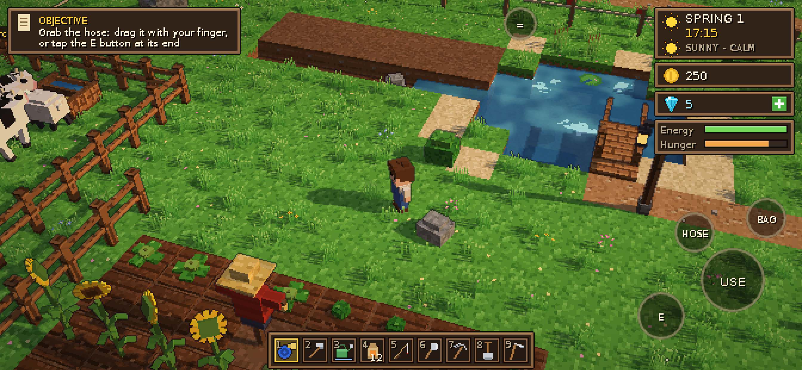
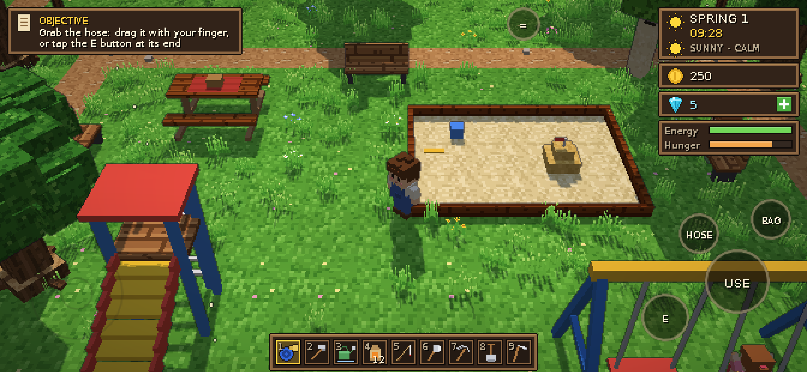
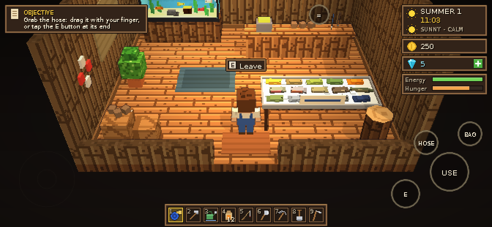
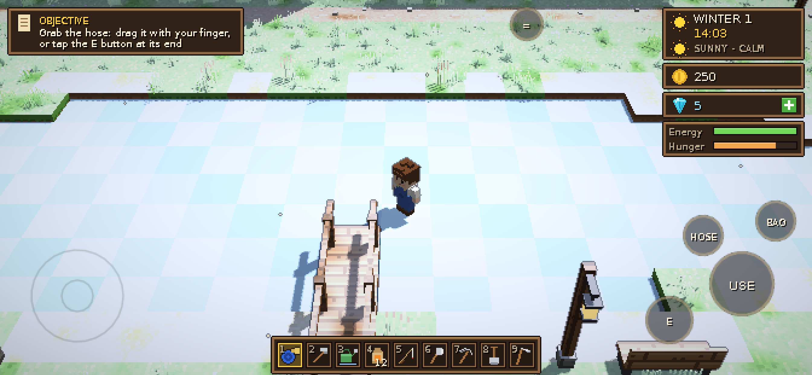

A small valley, a wild old farm, and a year to make it yours
Grandpa left you his farm, and nature has taken it back. Clear the logs and stones, till the soil, plant your first carrots and drag a real, wobbly garden hose across the field to water them. Restore Grandpa's old buildings, make friends in Maple Town and Willowbrook, and watch the seasons roll over the valley.




What you'll do
- Farm with real physicsHoses bend around trees, water sprays and splashes, and crops sway when you walk through them.
- Four seasonsEach season has its own crops. Snow settles slowly, the lakes freeze over, and there are festivals in spring and autumn.
- A valley full of peopleVillagers keep their own daily routines, talk to each other and remember your gifts. In the park, the kids really play on the swings.
- Rebuild the farmRestore the shed, the workshop, the storage and the barn. Craft at the workbench and build with stone from the quarry.
- Animals & fishingChickens, cows, sheep and your own horse, plus fish in the ponds, the river and the sea.
- Play offlineYour farm is saved on your device. You don't need an account.